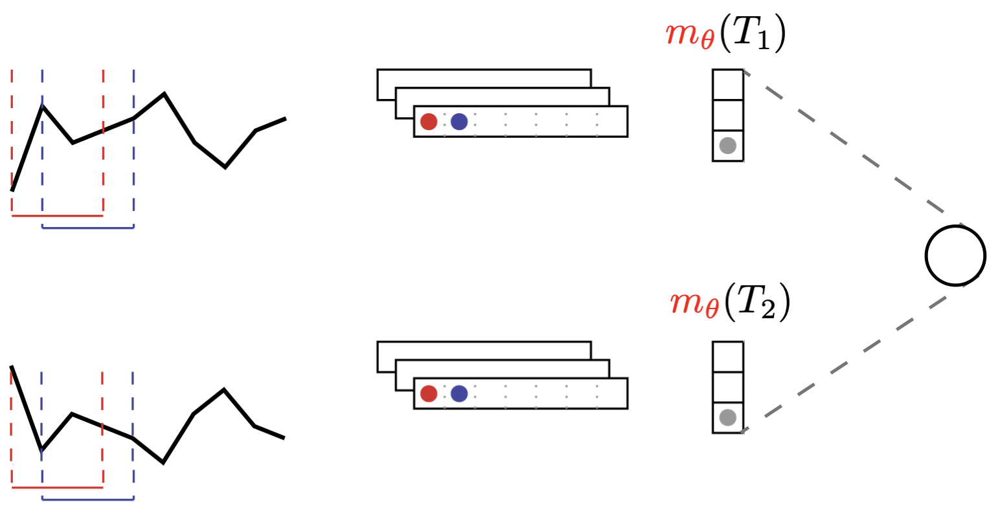

In this section, we will cover works that either relate to the Shapelet representation for time series or to the family of (1D) Convolutional Neural Networks, since these two families of methods are very similar in spirit (Lods, Malinowski, Tavenard, & Amsaleg, 2017).
Data Augmentation for Time Series Classification
Note. This work was part of Arthur Le Guennec's Master internship. We were co-supervising Arthur together with Simon Malinowski.
We have shown in (Le Guennec, Malinowski, & Tavenard, 2016) that augmenting time series classification datasets was an efficient way to improve generalization for Convolutional Neural Networks. The data augmentation strategies that were investigated in this work are local warping and window slicing and both lead to improvements.
Learning to Mimic a Target Distance
Note. This work was part of Arnaud Lods' Master internship. We were co-supervising Arnaud together with Simon Malinowski.
Another track of research we have lead concerns unsupervised representation learning for time series. In this context, our approach has consisted in learning a representation in order to mimic a target distance.
As presented in Sec. 1.2, Dynamic Time Warping is a widely used similarity measure for time series. However, it suffers from its non differentiability and the fact that it does not satisfy metric properties. Our goal in (Lods, Malinowski, Tavenard, & Amsaleg, 2017) was to introduce a Shapelet model that extracts latent representations such that Euclidean distance between latent representations is as close as possible to Dynamic Time Warping between original time series. The resulting model is an instance of a Siamese Network:

where $m_\theta(\cdot)$ is the feature extraction part of the model that maps a time series to its shapelet transform representation.
%config InlineBackend.figure_format = 'svg'
import matplotlib.pyplot as plt
import torch.nn as nn
import torch
import numpy
from torch.autograd import Variable
from sklearn.linear_model import LinearRegression
from tslearn.clustering import TimeSeriesKMeans
from tslearn.metrics import dtw
plt.ion()
def _kmeans_init_shapelets(X, n_shapelets, shp_len, n_draw=10000):
n_ts, sz, d = X.shape
indices_ts = numpy.random.choice(n_ts, size=n_draw, replace=True)
indices_time = numpy.random.choice(sz - shp_len + 1,
size=n_draw,
replace=True)
subseries = numpy.zeros((n_draw, shp_len, d))
for i in range(n_draw):
subseries[i] = X[indices_ts[i],
indices_time[i]:indices_time[i] + shp_len]
return TimeSeriesKMeans(n_clusters=n_shapelets,
metric="euclidean",
verbose=False).fit(subseries).cluster_centers_
def tslearn2torch(X):
X_ = torch.Tensor(numpy.transpose(X, (0, 2, 1)))
return X_
class MinPool1d(nn.Module):
""" Simple Hack for 1D min pooling. Input size = (N, C, L_in)
Output size = (N, C, L_out) where N = Batch Size, C = No. Channels
L_in = size of 1D channel, L_out = output size after pooling.
This implementation does not support custom strides, padding or dilation
Input shape compatibilty by kernel_size needs to be ensured
This code comes from:
https://github.com/reachtarunhere/pytorch-snippets/blob/master/min_pool1d.py
(under MIT license)
"""
def __init__(self, kernel_size=3):
super(MinPool1d, self).__init__()
self.kernel_size = kernel_size
def forward(self, l):
N, C, L = [l.size(i) for i in range(3)]
l = l.view(N, C, int(L / self.kernel_size), self.kernel_size)
return l.min(dim=3)[0].view(N, C, -1)
class ShapeletLayer(nn.Module):
"""Shapelet layer.
Computes sliding window distances between a set of time series and a set
of shapelets.
Parameters
----------
in_channels : int
Number of input channels (modalities of the time series)
out_channels: int
Number of output channels (number of shapelets)
kernel_size: int
Shapelet length
Examples
--------
>>> time_series = torch.Tensor([[1., 2., 3., 4., 5.], [-4., -5., -6., -7., -8.]]).view(2, 1, 5)
>>> shapelets = torch.Tensor([[1., 2.], [3., 4.], [5., 6.]])
>>> layer = ShapeletLayer(in_channels=1, out_channels=3, kernel_size=2)
>>> layer.weight.data = shapelets
>>> dists = layer.forward(time_series)
>>> dists.shape
torch.Size([2, 3, 4])
>>> dists[0]
tensor([[ 0., 1., 4., 9.],
[ 4., 1., 0., 1.],
[16., 9., 4., 1.]], grad_fn=<SelectBackward>)
"""
def __init__(self, in_channels, out_channels, kernel_size):
super(ShapeletLayer, self).__init__()
self.kernel_size = kernel_size
self.out_channels = out_channels
self.false_conv_layer = nn.Conv1d(in_channels=in_channels,
out_channels=in_channels,
kernel_size=kernel_size,
bias=False)
data = torch.Tensor(numpy.eye(kernel_size))
self.false_conv_layer.weight.data = data.view(kernel_size,
1,
kernel_size)
for p in self.false_conv_layer.parameters():
p.requires_grad = False
self.weight = nn.Parameter(torch.Tensor(out_channels,
kernel_size))
def forward(self, x):
reshaped_x = self.false_conv_layer(x)
reshaped_x = torch.transpose(reshaped_x, 1, 2)
reshaped_x = reshaped_x.contiguous().view(-1, self.kernel_size)
distances = self.pairwise_distances(reshaped_x, self.weight)
distances = distances.view(x.size(0), -1, self.out_channels)
return torch.transpose(distances, 1, 2)
@classmethod
def pairwise_distances(cls, x, y):
"""Computes pairwise distances between vectors in x and those in y.
Computed distances are normalized (i.e. divided) by the dimension of
the space in which vectors lie.
Assumes x is 2d (n, d) and y is 2d (l, d) and returns
a tensor of shape (n, l).
Parameters
----------
x : Tensor of shape=(n, d)
y : Tensor of shape=(l, d)
Returns
-------
A 2d Tensor of shape (n, l)
"""
L = y.size(-1)
x_norm = (x ** 2).sum(1).view(-1, 1)
y_t = torch.transpose(y, 0, 1)
y_norm = (y ** 2).sum(1).view(1, -1)
dist = x_norm + y_norm - 2.0 * torch.mm(x, y_t)
return torch.clamp(dist, 0.0, numpy.inf) / L
Here is a PyTorch implementation of this model:
class LDPSModel(nn.Module):
"""Learning DTW-Preserving Shapelets (LDPS) model.
Parameters
----------
n_shapelets_per_size: dict (optional, default: None)
Dictionary giving, for each shapelet size (key),
the number of such shapelets to be trained (value)
None should be used only if `load_from_disk` is set
ts_dim: int (optional, default: None)
Dimensionality (number of modalities) of the time series considered
None should be used only if `load_from_disk` is set
lr: float (optional, default: 0.01)
Learning rate
epochs: int (optional, default: 500)
Number of training epochs
batch_size: int (optional, default: 64)
Batch size for training procedure
verbose: boolean (optional, default: True)
Should verbose mode be activated
Note
----
This implementation requires a dataset of equal-sized time series.
"""
def __init__(self,
n_shapelets_per_size=None, # dict sz_shp -> n_shp
ts_dim=1,
lr=.01,
epochs=500,
batch_size=64,
verbose=True):
super(LDPSModel, self).__init__()
self.n_shapelets_per_size = n_shapelets_per_size
self.ts_dim = ts_dim
self.lr = lr
self.epochs = epochs
self.batch_size = batch_size
self.verbose = verbose
self._set_layers_and_optim()
def _set_layers_and_optim(self):
self.shapelet_sizes = sorted(self.n_shapelets_per_size.keys())
self.shapelet_blocks = self._get_shapelet_blocks()
self.scaling_layer = nn.Linear(1, 1, bias=False)
self.optimizer = torch.optim.Adam(self.parameters(), lr=self.lr)
def _get_shapelet_blocks(self):
return nn.ModuleList([
ShapeletLayer(
in_channels=self.ts_dim,
out_channels=self.n_shapelets_per_size[shapelet_size],
kernel_size=shapelet_size
) for shapelet_size in self.shapelet_sizes
])
def _temporal_pooling(self, x):
pool_size = x.size(-1)
pooled_x = MinPool1d(kernel_size=pool_size)(x)
return pooled_x.view(pooled_x.size(0), -1)
def _features(self, x):
features_maxpooled = []
for shp_sz, block in zip(self.shapelet_sizes, self.shapelet_blocks):
f = block(x)
f_maxpooled = self._temporal_pooling(f)
features_maxpooled.append(f_maxpooled)
return torch.cat(features_maxpooled, dim=-1)
def _init_params(self):
for m in self.shapelet_blocks:
self._shapelet_initializer(m.weight)
# Initialize scaling using linear regression
pair, targets = self.get_batch(self.X_fit_)
nn.init.constant_(self.scaling_layer.weight, 1.) # Start without scale
output = self(pair)
reg_model = LinearRegression(fit_intercept=False)
reg_model.fit(output.detach().numpy(), targets.detach().numpy())
nn.init.constant_(self.scaling_layer.weight, reg_model.coef_[0, 0])
def _shapelet_initializer(self, w):
X_npy = numpy.transpose(self.X_fit_, axes=(0, 2, 1))
shapelets_npy = _kmeans_init_shapelets(X=X_npy,
n_shapelets=w.size(0),
shp_len=w.size(1))
w.data = torch.Tensor(shapelets_npy.reshape((w.size(0), w.size(1))))
def forward(self, x):
xi, xj = x
emb_xi = self._features(xi)
emb_xj = self._features(xj)
norm_ij = torch.norm(emb_xi - emb_xj, p=2, dim=1, keepdim=True)
scaled_norm_ij = self.scaling_layer(norm_ij)
return scaled_norm_ij
def get_batch(self, X):
n_samples = X.size(0)
batch_indices1 = numpy.random.choice(n_samples, size=self.batch_size)
batch_indices2 = numpy.random.choice(n_samples, size=self.batch_size)
X1 = Variable(X[batch_indices1].type(torch.float32),
requires_grad=False)
X2 = Variable(X[batch_indices2].type(torch.float32),
requires_grad=False)
targets_tensor = torch.Tensor([dtw(X1[i].T, X2[i].T)
# NOTE: tslearn dim ordering is reverse
for i in range(self.batch_size)])
targets = Variable(targets_tensor.view(-1, 1), requires_grad=False)
return (X1, X2), targets
def fit(self, X):
"""Learn shapelets and weights for a given dataset.
Parameters
----------
X : numpy array of shape=(n_ts, sz, 1)
Time series dataset
Returns
-------
LDPSModel
The fitted model
"""
X_ = tslearn2torch(X)
self.X_fit_ = X_
self._init_params()
loss_fun = nn.MSELoss()
n_batch_per_epoch = max(X_.size(0) // self.batch_size, 1)
for epoch in range(self.epochs):
running_loss = 0.0
for _ in range(n_batch_per_epoch):
inputs, targets = self.get_batch(X_)
# zero the parameter gradients
self.optimizer.zero_grad()
# forward + backward + optimize
preds = self(inputs)
loss = loss_fun(preds, targets)
loss.backward()
self.optimizer.step()
running_loss += loss.item()
if self.verbose and (epoch + 1) % 50 == 0:
print('[%d] loss: %.3f' %
(epoch + 1, running_loss / n_batch_per_epoch)
)
return self
and a simple example usage:
from tslearn.datasets import UCR_UEA_datasets
X, _, X_test, _ = UCR_UEA_datasets().load_dataset("SwedishLeaf")
numpy.random.seed(0)
torch.manual_seed(0)
model = LDPSModel(n_shapelets_per_size={30: 5},
lr=.001,
epochs=1000,
batch_size=16)
model.fit(X[:10])
pairs, targets = model.get_batch(tslearn2torch(X_test[:10]))
outputs = model(pairs)
plt.scatter(outputs.detach().numpy(),
targets.detach().numpy(),
color="b", marker="x")
max_val = max(outputs.max(), targets.max())
plt.plot([0., max_val], [0., max_val], "r-")
plt.xlabel("Distance in the Shapelet Transform space")
plt.ylabel("Dynamic Time Warping distance");
We have shown that such a model could be used as a feature extractor on top of which a $k$-means clustering could operate efficiently. We have also shown in (Carlini Sperandio, Malinowski, Amsaleg, & Tavenard, 2018) that this representation is useful for time series indexing tasks.
Including Localization Information
Note. This work was part of Mael Guillemé's PhD thesis. I was not involved in Mael's PhD supervision.
The shapelet transform, as defined above, does not hold localization information. Several options could be considered to add such kind of information. First, the global pooling step could be turned into local pooling to keep track of local shapelet distances. In (Guilleme, Malinowski, Tavenard, & Renard, 2019), we rather focused on augmenting the feature representation with shapelet match localization features.
Relying on a set of random shapelets (shapelets that are extracted uniformly at random from the set of all subseries in the training set) $\{\mathbf{s_k}\}_{k < p}$, each time series is embedded into a $2p$-dimensional feature that stores, for each shapelet, the shapelet distance $d_{\mathbf{s_k}}(\cdot)$ as well as optimal match localization $l_{\mathbf{s_k}}(\cdot)$:
\begin{eqnarray} d_{\mathbf{s_k}}(\mathbf{x}) &=& \min_t \|\mathbf{x}_{t \rightarrow t+L_k} - \mathbf{s_k}\| \\ l_{\mathbf{s_k}}(\mathbf{x}) &=& \arg \min_t \|\mathbf{x}_{t \rightarrow t+L_k} - \mathbf{s_k}\| \end{eqnarray}where $L_k$ is the length of the $k$-th shapelet and $\mathbf{x}_{t \rightarrow t+L_k}$ is the subseries from $\mathbf{x}$ that starts at timestamp $t$ and has length $L_k$.
In the random shapelet setting, a large number of shapelets are drawn and feature selection is used afterwards to focus on most useful shapelets. In our specific context, we have introduced a structured feature selection mechanism that allows, for each shapelet, to either:
- discard all information (match magnitude and localization);
- keep shapelet distance information and discard localization information;
- keep all information (match magnitude and localization).
To do so, we have introduced a modified Group-Lasso (called Semi-Sparse Group Lasso) loss that allows to enforce sparsity on some individual variables only:
\begin{equation} \mathcal{L}^{\mathrm{SSGL}}(\mathbf{x}, y, \boldsymbol{\theta}) = \mathcal{L}(\mathbf{x}, y, \boldsymbol{\theta}) + \alpha \lambda \left\| \mathbf{M}_\text{ind} \boldsymbol{\beta} \right\|_1 + (1-\alpha) \lambda \sum_{k=1}^{K} \sqrt{p_k} \left\| \boldsymbol{\beta}^{(k)} \right\|_2 \end{equation}where $\mathbf{M}_\text{ind}$ is a diagonal indicator matrix that has ones on the diagonal for features that could be discarded individually (localization features in our random shapelet case), $\boldsymbol{\theta}$ is the set of all model weights, including weights $\boldsymbol{\beta}$ that are directly connected to the features (ie. these are weights from the first layer), that are organized in groups $\boldsymbol{\beta}^{(k)}$ of size $p_k$ ($p_k=2$ in the random shapelet context, each group corresponding to a different shapelet).
%config InlineBackend.figure_format = 'svg'
import matplotlib.pyplot as plt
import numpy
plt.ion()
def plot_results(beta_star,
beta_hat_ssgl=None, mse_ssgl=None,
beta_hat_sgl=None, mse_sgl=None):
plt.figure(figsize=(6, 2))
plt.set_cmap("tab10")
ind = numpy.arange(dim)
width = 0.25
plt.bar(ind, numpy.abs(beta_star), width,
label="Ground-truth",
lw=2,
alpha=0.6)
if beta_hat_ssgl is not None:
plt.bar(ind+width, numpy.abs(beta_hat_ssgl), width,
label="SSGL (MSE=%.2f)" % mse_ssgl,
lw=2,
alpha=0.6)
if beta_hat_sgl is not None:
plt.bar(ind+2*width, numpy.abs(beta_hat_sgl), width,
label="SGL (MSE=%.2f)" % mse_sgl,
lw=2,
alpha=0.6)
plt.gca().set_yscale("log")
labels = []
for group_id in range(3):
for feature_id in range(n_features_per_group):
labels.append("$\\beta_%d^{(%d)}$" % (feature_id + 1, group_id + 1))
plt.legend(loc="upper left")
plt.ylabel("Beta values")
plt.gca().set_xticklabels(labels)
plt.gca().set_xticks(numpy.arange(6) + .3)
plt.tight_layout(pad=2.)
Given data generated with a process that is similar to what our SSGL regularization can handle:
numpy.random.seed(0)
n_groups = 3
n_features_per_group = 2
n = 1000
noise_level = .01
dim = n_groups * n_features_per_group
groups = numpy.repeat(numpy.arange(n_groups), n_features_per_group)
ind_sparse = numpy.zeros((dim,))
ind_sparse[0] = 1.
ind_sparse[2] = 1.
ind_sparse[4] = 1.
beta_star = numpy.array([0., 0., 0.005, 0., 1.5, 2.])
X = numpy.random.randn(n, dim)
y = numpy.dot(X, beta_star) + noise_level * numpy.random.rand(n)
X_test = numpy.random.randn(n, dim)
y_test = numpy.dot(X_test, beta_star) + noise_level * numpy.random.rand(n)
and using the following PyTorch code for our model definition:
import torch
import torch.nn as nn
import torch.optim as optim
class SemiSparseGroupLasso(nn.Module):
def __init__(self, dim_input, groups, indices_sparse, alpha, lbda):
super().__init__()
self.dim_input = dim_input
self.linear_layer = nn.Linear(dim_input, 1)
self.groups = torch.Tensor(groups)
self.indices_sparse = torch.Tensor(indices_sparse)
self.alpha = alpha
self.lbda = lbda
self.set_groups = set(groups)
@property
def coef_(self):
return self.linear_layer.weight.detach().numpy()
def forward(self, X):
return self.linear_layer(X)
def loss_(self, y_hat, y):
l = nn.MSELoss()(y_hat, y)
l1_norm = torch.norm(
self.linear_layer.weight.flatten() * self.indices_sparse,
p=1
)
l += self.lbda * self.alpha * l1_norm
for gr_id in self.set_groups:
indices_k = self.groups == gr_id
p_k = indices_k.sum(dtype=torch.float)
l2_norm_k = torch.norm(self.linear_layer.weight[0, indices_k], p=2)
l += self.lbda * (1. - self.alpha) * torch.sqrt(p_k) * l2_norm_k
return l
def fit(self, X, y):
X_ = torch.Tensor(X)
y_ = torch.Tensor(y.reshape((-1, 1)))
assert X_.size(1) == self.dim_input
optimizer = optim.Adam(self.parameters(), lr=1e-2)
for t in range(2000):
y_pred = self(X_)
loss = self.loss_(y_pred, y_)
self.zero_grad()
loss.backward()
optimizer.step()
return self
def predict_numpy1d(self, X):
X_ = torch.Tensor(X)
return self.linear_layer(X_).detach().numpy().reshape((-1, ))
we get:
from sklearn.linear_model import Lasso
numpy.random.seed(0)
torch.manual_seed(0)
model_ssgl = SemiSparseGroupLasso(dim_input=6, groups=groups,
indices_sparse=ind_sparse,
alpha=.5, lbda=1e-2)
model_ssgl.fit(X, y)
beta_hat_ssgl = model_ssgl.coef_.flatten()
mse_ssgl = numpy.sum((model_ssgl.predict_numpy1d(X_test) - y_test) ** 2)
model_sgl = SemiSparseGroupLasso(dim_input=6, groups=groups,
indices_sparse=numpy.ones(ind_sparse.shape),
alpha=.5, lbda=1e-2)
model_sgl.fit(X, y)
beta_hat_sgl = model_sgl.coef_.flatten()
mse_sgl = numpy.sum((model_sgl.predict_numpy1d(X_test) - y_test) ** 2)
plot_results(
beta_star,
beta_hat_ssgl=beta_hat_ssgl, mse_ssgl=mse_ssgl,
beta_hat_sgl=beta_hat_sgl, mse_sgl=mse_sgl
)
and one can notice that SSGL slightly outperforms Sparse-Group Lasso (SGL) in terms of both Mean Squared Error (MSE) and estimation of zero coefficients.
When applied to the specific case of random shapelets, we have shown that this lead to improved accuracy as soon as datasets are large enough for coefficients to be estimated properly.
Learning Shapelets that Look Like Time Series Snippets
Note. This work is part of Yichang Wang's PhD thesis. I am co-supervising Yichang with Élisa Fromont, Rémi Emonet and Simon Malinowski.
Early works on shapelet-based time series classification relied on a direct extraction of shapelets as time series snippets from the training set. Selected shapelets could be used a posteriori to explain the classifier's decision from realistic features. However, the shapelet enumeration and selection processes were either very costly or the selection was fast but did not yield good performance. Jointly learning a shapelet-based representation of the series in the dataset and classifying the series according to this representation (Grabocka, Schilling, Wistuba, & Schmidt-Thieme, 2014) allowed to obtain discriminative shapelets in a much more efficient way.
However, if the learned shapelets are definitively discriminative, they are often very different from actual pieces of a real series in the dataset. As such, these shapelets might not be suited to explain a particular classifier's decision. In TODO cite, we rely on a simple convolutional network to classify time series and use an adversarial network that acts as a regularizer to ensure that learned shapelets are un-distinguishable from actual time series pieces from the training set.
References
- Lods, A., Malinowski, S., Tavenard, R., & Amsaleg, L. (2017). Learning DTW-Preserving Shapelets. In IDA 2017 - 16th International Symposium on Intelligent Data Analysis (Vol. 10584, pp. 198–209). London, United Kingdom: springer International Publishing.
- Le Guennec, A., Malinowski, S., & Tavenard, R. (2016). Data Augmentation for Time Series Classification using Convolutional Neural Networks. In ECML/PKDD Workshop on Advanced Analytics and Learning on Temporal Data. Riva Del Garda, Italy.
- Carlini Sperandio, R., Malinowski, S., Amsaleg, L., & Tavenard, R. (2018). Time Series Retrieval using DTW-Preserving Shapelets. In SISAP 2018 – 11th International Conference on Similarity Search and Applications (pp. 257–270). Lima, Peru: Springer.
- Guilleme, M., Malinowski, S., Tavenard, R., & Renard, X. (2019). Localized Random Shapelets. In International Workshop on Advanced Analysis and Learning on Temporal Data (pp. 85–97).
- Grabocka, J., Schilling, N., Wistuba, M., & Schmidt-Thieme, L. (2014). Learning time-series shapelets. In Proceedings of the 20th ACM SIGKDD international conference on Knowledge discovery and data mining (pp. 392–401).